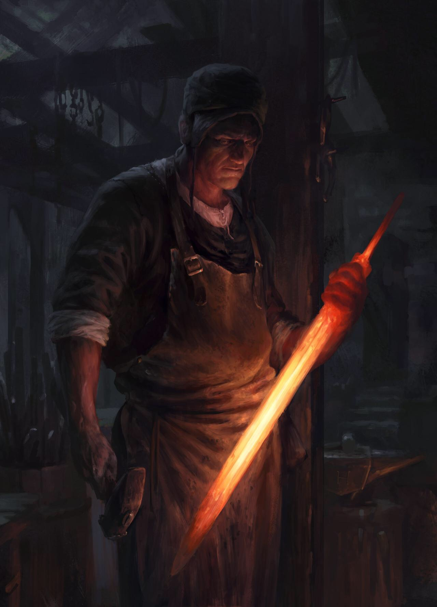

Blake "The Archivist" Andersen
"The Archivist" is a historian, hunter, and Burnish scholar renowned for his research across the Meylands. Perhaps the foremost expert on pre-Burnish lore and archaeology in the world, his work is the subject of scandal in the west, and of debate in the east.
He has been known to take a more "hands-on" approach to his research, having stolen from royal archives, disturbed tombs, and come face to face with speaking beasts over the course of his career.
His exact identity remains unknown to most, but is often described as a tall, Yenuvan man with short-cut hair. Wearing a long travel-coat, worn boots, and a nose for secrets.
Nikoli Daedala
Grand Federal Engineer

Nikoli Daedala is the engineer behind many of Burnsville's military and industrial technologies. He spends most of his time isolated in his workshop, and even when he leaves, is most often wearing casual working clothes with his craftsman apron. His physical strength is apparent to any who see him, although he does not make a show of it. He cares most about protecting his daughter Mercy, after the death of his wife in a vonic raid.
Mina Serphent
Mina is a well-known mercenary, and self-described "god-hunter" from Janta. She studies magical arts and witchcraft, and uses these to create specialized weapons, tools, and gadgets for her work. She specializes in locating, persuing, and dispatching monsters and deminezu-class beings.